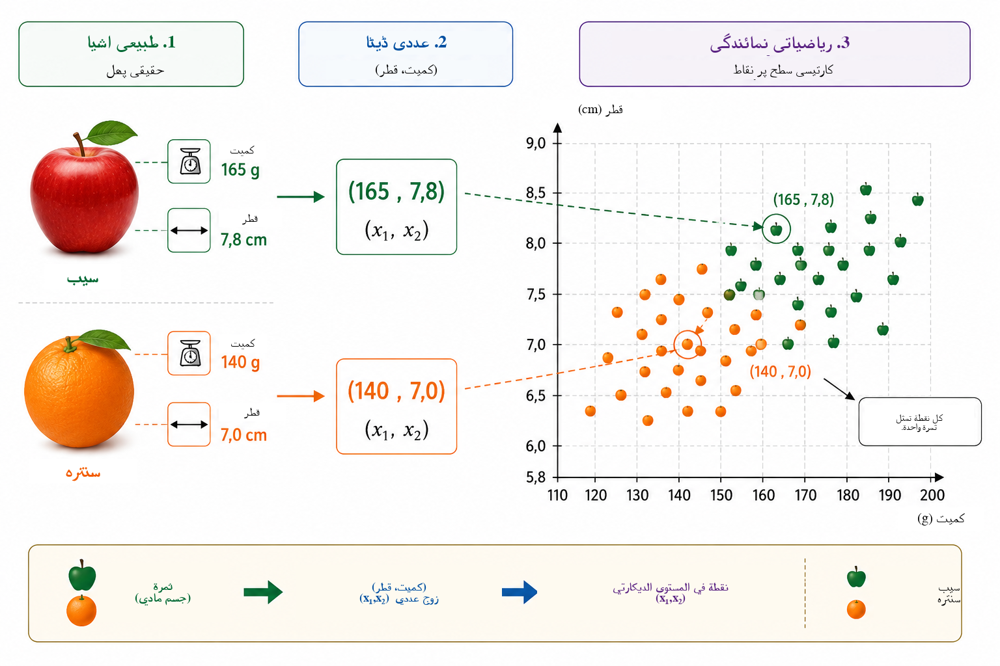
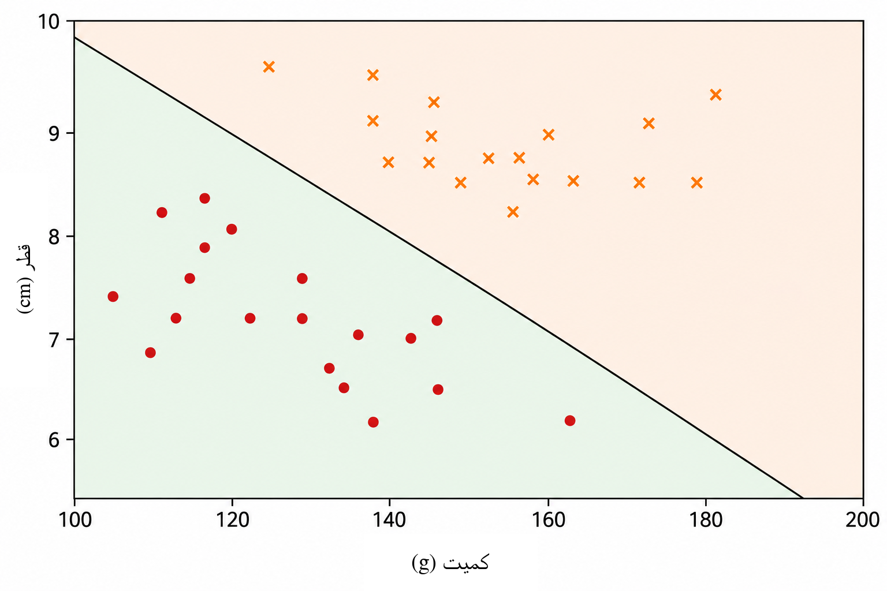
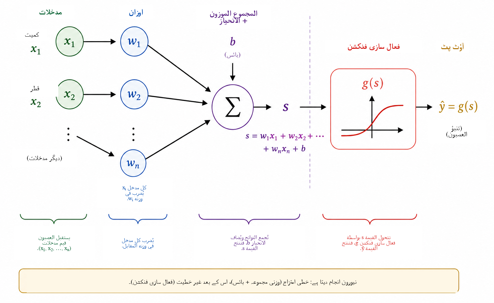
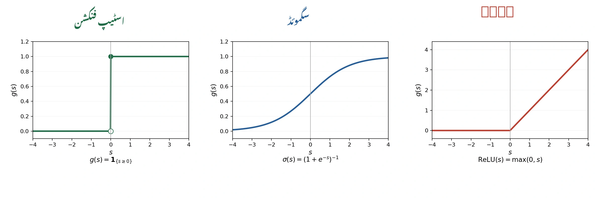
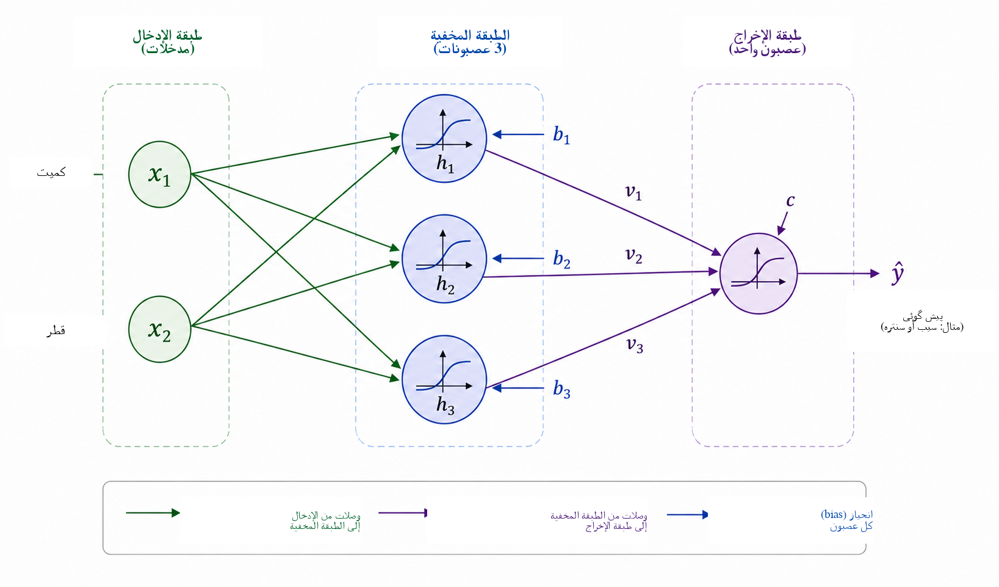
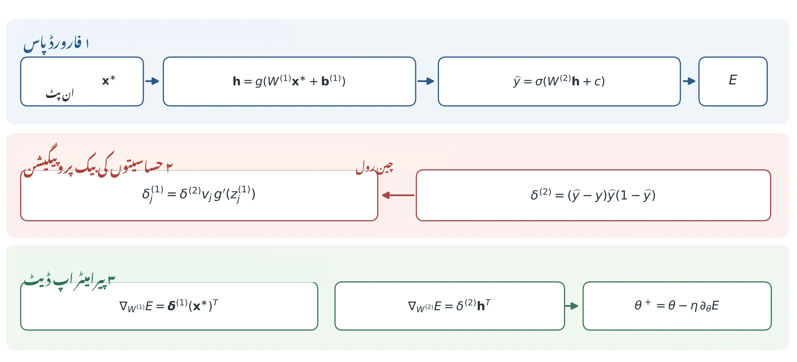
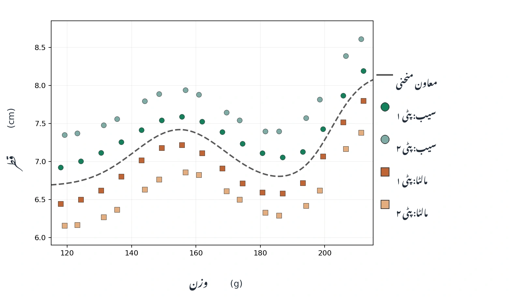
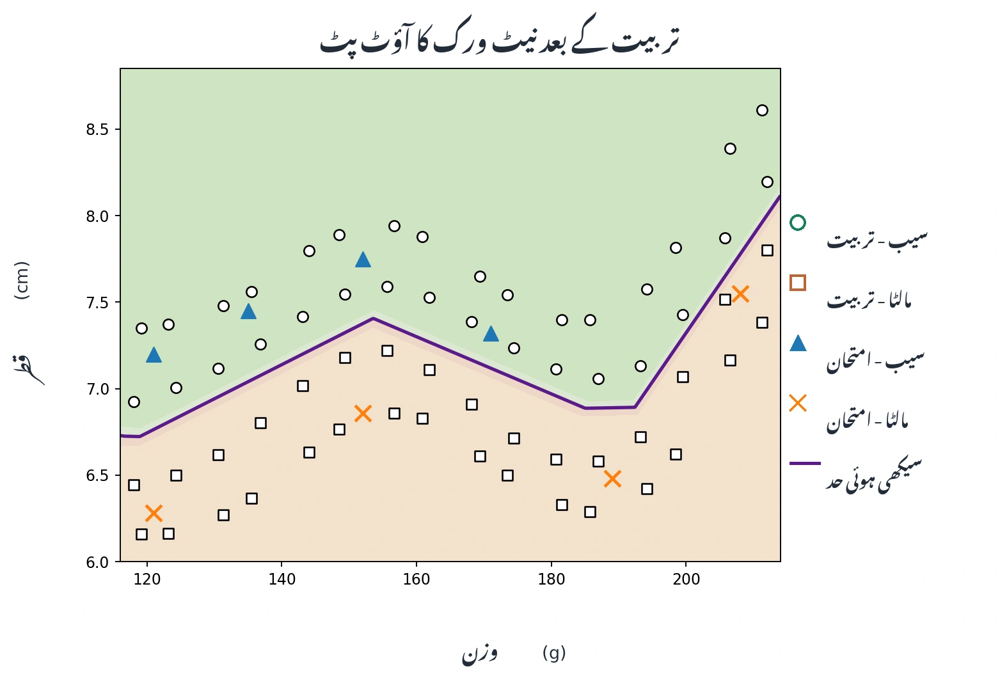

کمپیوٹر کب سیکھ سکتا ہے؟
روزمرہ زندگی میں ہم تقریباً غیر محسوس طور پر درجہ بندی کے فیصلے کرتے رہتے ہیں۔ کسی پھل کو دیکھ کر ہم فوراً پہچان لیتے ہیں کہ وہ سیب ہے یا سنترہ؛ فون پر پیغام آنے پر ہم حقیقی گفتگو کو ناپسندیدہ اشتہار سے الگ کرتے ہیں؛ طبی تجزیے میں کئی پیمائشوں کو ملا کر کسی فیصلے کی مدد کی جا سکتی ہے؛ اور مالیاتی اداروں میں قرض دینے سے پہلے متعدد معلومات کا جائزہ لیا جاتا ہے۔ ان سب مثالوں میں جواب پیدا کرنے کے لیے کئی خصوصیات کو ایک ساتھ دیکھا جاتا ہے۔
بہت سے روایتی کمپیوٹر پروگراموں میں وہ قواعد جن سے جواب پیدا ہوتا ہے، پروگرامر واضح طور پر لکھتا ہے۔ جب قواعد معلوم ہوں اور انہیں صاف انداز میں بیان کیا جا سکے تو یہ طریقہ اچھا کام کرتا ہے۔ لیکن جب ڈیٹا بہت متغیر ہو، یا اچھے فیصلے کے لیے درکار تمام شرائط پہلے سے لکھنا دشوار ہو، تو یہ طریقہ کم مؤثر ہو جاتا ہے۔ اس سے ایک فطری سوال پیدا ہوتا ہے:
کیا ہم ایسا پروگرام بنا سکتے ہیں جو فیصلہ کرنے کا قاعدہ پہلے سے حاصل کرنے کے بجائے مثالوں سے سیکھے؟
یہ مشین لرننگ کے مرکزی تصورات میں سے ایک ہے، جو مصنوعی ذہانت کا وہ شعبہ ہے جس میں ڈیٹا سے ماڈل موزوں کرنے کے طریقوں کا مطالعہ کیا جاتا ہے ۔ زیرِ نگرانی سیکھنے کے مسئلے میں الگورتھم کو درست جوابات کے ساتھ مثالیں دی جاتی ہیں، اور ہم ایسا ماڈل تلاش کرتے ہیں جو تربیت میں استعمال نہ ہونے والے معاملات کے لیے بھی مفید پیش گوئیاں کر سکے۔ اس مقصد کے لیے بنائے گئے بہت سے ماڈلز میں مصنوعی اعصابی نیٹ ورکس تصویر شناسی، زبان کی پروسیسنگ، سگنل تجزیے اور زمانی سلسلوں کی پیش گوئی جیسی تطبیقات میں اہم ہو چکے ہیں ۔
اعصابی نیٹ ورکس کو ریاضی، کمپیوٹنگ اور اسکولی تعلیم کے درمیان پل کے طور پر استعمال کرنے پر Batista اور Martins نے Professor de Matemática Online میں پہلے ہی بحث کی ہے ؛ انہوں نے اساتذہ کی تربیت، Python اور ہندسوں کی شناخت پر مشتمل ایک سرگرمی پیش کی۔ موجودہ مضمون ایک تکمیلی راستہ اختیار کرتا ہے۔ ہمارا بنیادی مقصد ایک چھوٹے اعصابی نیٹ ورک کی اندرونی ریاضی کو واضح کرنا ہے: تحلیلی ہندسہ سے آغاز کرتے ہوئے قدم بہ قدم گریڈینٹ کے حساب اور بیک پروپیگیشن کی دستی تنفیذ تک پہنچنا۔
جدید تطبیقات کی پیچیدگی کے باوجود، اعصابی نیٹ ورک کا ریاضیاتی جوہر نسبتاً مانوس تصورات سے متعارف کرایا جا سکتا ہے۔ بنیادی سطح پر اعصابی نیٹ ورک فنکشنز کا ایک مرکب ہے جس کے پیرامیٹرز ڈیٹا سے ایڈجسٹ کیے جاتے ہیں۔ ہم ایک سادہ ہندسی مسئلے سے شروع کرتے ہیں، جدا کرنے والی لکیر کو مصنوعی نیورون کے طور پر دوبارہ تعبیر کرتے ہیں، کئی نیورونز کو جوڑتے ہیں، فعال سازی فنکشنز کے کردار کا مطالعہ کرتے ہیں، اور دکھاتے ہیں کہ مشتقات نیٹ ورک کے پیرامیٹرز کو خودکار طور پر ایڈجسٹ کرنے کے لیے کیسے استعمال ہو سکتے ہیں۔ آخر میں ہم Python میں ایک مکمل مگر چھوٹی مثال نافذ کرتے ہیں، جس میں مساوات اور کوڈ کے درمیان براہ راست مطابقت برقرار رہتی ہے۔
مسئلے کی ریاضیاتی نمائندگی
اعصابی نیٹ ورک کے کام کرنے کے طریقے کو سمجھنے کے لیے ہم جان بوجھ کر ایک سادہ مسئلے سے آغاز کرتے ہیں: سیب اور سنترے میں فرق کرنا۔ کسی پھل کی بہت سی خصوصیات اس کام کے لیے مفید ہو سکتی ہیں، مثلاً رنگ، کمیت، قطر، بناوٹ اور خوشبو۔ تاہم ابتدائی ریاضیاتی ماڈل میں یہ تمام پیچیدگی شامل کرنا ضروری نہیں۔ ہم صرف دو ایسی مقداریں استعمال کریں گے جنہیں آسانی سے ناپا جا سکتا ہے: کمیت، گرام میں، اور قطر، سینٹی میٹر میں۔
لہٰذا ہر پھل کو ایک مرتب جوڑے سے ظاہر کیا جائے گا \[(x_1,x_2),\] جہاں \[x_1=\text{کمیت} \qquad\text{اور}\qquad x_2=\text{قطر}.\]
پس جوڑا \((155,\;7.2)\) ایک ایسے پھل کی نمائندگی کرتا ہے جس کی کمیت \(155\) g اور قطر \(7.2\) cm ہے۔ طبعی شے کی جگہ دو عددی پیمائشیں رکھ کر ہم ہر پھل کو کارتیسی سطح پر ایک نقطے سے وابستہ کرتے ہیں: پہلی محدد کمیت اور دوسری قطر بتاتی ہے۔ شکل 1 فرضی سیبوں اور سنتروں کے ایک مجموعے کے لیے اس نمائندگی کو دکھاتی ہے۔

یہ تبدیلی مسئلے کی ظاہری نوعیت بدل دیتی ہے۔ سیب یا سنترے کو براہ راست پہچاننے کا سوال پوچھنے کے بجائے ہم ایک ہندسی سوال پوچھ سکتے ہیں: دونوں جماعتوں سے تعلق رکھنے والے نقاط کو سطح میں کیسے جدا کیا جا سکتا ہے؟ زاویۂ نظر کی یہ تبدیلی مشین لرننگ میں بنیادی اہمیت رکھتی ہے۔ تصاویر، متون، آوازیں اور تجرباتی سگنلز کسی الگورتھم کے ذریعے پروسیس ہونے سے پہلے عددی نمائندگیوں میں تبدیل کیے جانے چاہییں۔ ہماری مثال میں ہر شے کی صرف دو محدد ہیں؛ حقیقی تطبیقات میں ایک نمائندگی سینکڑوں، ہزاروں، بلکہ لاکھوں اجزا پر مشتمل ہو سکتی ہے۔ اصول وہی رہتا ہے: ہر مثال کو اعداد کے ایک مجموعے سے وابستہ کیا جاتا ہے، اور ماڈل ایسا قاعدہ تلاش کرتا ہے جو اس نمائندگی کو مطلوبہ جواب سے ملائے۔
ہم سب سے سادہ دستیاب ہندسی قاعدے سے آغاز کرتے ہیں اور پوچھتے ہیں کہ کیا ایک واحد سیدھی لکیر سیب کے نقاط کو سنترے کے نقاط سے مناسب طور پر جدا کر سکتی ہے۔
سیدھی لکیر بطور درجہ بند
جب ہر پھل کو کارتیسی سطح پر ایک نقطے سے ظاہر کر دیا جائے تو درجہ بندی ایک ہندسی مسئلہ بن جاتی ہے: کیا ایک سیدھی لکیر سیبوں کو سنتروں سے جدا کر سکتی ہے؟ یہ سوال مشین لرننگ کے ایک اہم خاندان، جسے خطی درجہ بند کہا جاتا ہے، کے بنیادی تصور کو بیان کرتا ہے۔
ڈیٹا کے بادل کو کاٹتی ہوئی ایک لکیر پر غور کریں، جیسا کہ شکل 2 میں دکھایا گیا ہے۔ یہ لکیر سطح کو دو نصف سطحوں میں تقسیم کرتی ہے۔ اگر زیادہ تر سیب ایک طرف اور زیادہ تر سنترے دوسری طرف ہوں، تو کسی نئے پھل کی لکیر کے نسبت پوزیشن کو درجہ بندی کے قاعدے کے طور پر استعمال کیا جا سکتا ہے۔ کمیت اور قطر ناپنے کے بعد ہم پھل کو ایک نقطے سے ظاہر کرتے ہیں اور طے کرتے ہیں کہ یہ نقطہ لکیر کے کس طرف ہے۔

کارتیسی سطح \((x_1,x_2)\) میں ایک لکیر کو یوں بیان کیا جا سکتا ہے \[w_1x_1+w_2x_2+b=0, \qquad (w_1,w_2)\neq(0,0).\]
ویکٹر \((w_1,w_2)\) لکیر پر عمود ہے، اس لیے اس کی سمت متعین کرتا ہے، جبکہ پیرامیٹر \(b\) اس کی جگہ میں حصہ ڈالتا ہے۔ اس نمائندگی میں ایک معمولی زائد پن ہے: \(w_1\)، \(w_2\) اور \(b\) کو ایک ہی غیر صفر مستقل سے ضرب دینے پر بالکل وہی لکیر حاصل ہوتی ہے۔ چنانچہ حد کو بیان کرنے والے پیرامیٹرز یکتا نہیں۔ ان کی عددی تعبیر متغیرات کے پیمانے پر بھی منحصر ہے۔ چونکہ کمیت گرام اور قطر سینٹی میٹر میں ناپے جاتے ہیں، اس لیے مختلف اکائیوں کو مدنظر رکھے بغیر \(w_1\) اور \(w_2\) کی عددی قدروں کا براہ راست موازنہ نہیں کرنا چاہیے۔
لکیر کی مساوات خود یہ معلوم کرنے کا سادہ طریقہ دیتی ہے کہ نقطہ حد کے کس طرف ہے۔ اسکور کو یوں تعریف کریں \[s(x_1,x_2)=w_1x_1+w_2x_2+b.\]
اگر \(s(x_1,x_2)=0\) ہو تو نقطہ لکیر پر ہے۔ اگر \(s(x_1,x_2)>0\) ہو تو وہ ایک نصف سطح میں، اور اگر \(s(x_1,x_2)<0\) ہو تو دوسری نصف سطح میں ہے۔ اگر ہم طے کریں کہ مثبت اسکور سیب اور منفی اسکور سنترے کے مطابق ہیں، تو قاعدہ بنتا ہے \[\begin{cases} s(x_1,x_2)\geq 0 & \Longrightarrow \text{سیب},\\ s(x_1,x_2)<0 & \Longrightarrow \text{سنترہ}. \end{cases}\]
مثال کے طور پر اس حد پر غور کریں \[w_1=\frac{1}{10}, \qquad w_2=2, \qquad b=-30.\] \(160\) g کمیت اور \(7.8\) cm قطر والے پھل کے لیے \[\begin{aligned} s &=\frac{1}{10}\times160+2\times7.8-30\\ &=16+15.6-30\\ &=1.6. \end{aligned}\] چونکہ اسکور مثبت ہے، نقطہ اس نصف سطح میں واقع ہے جسے ہم نے سیبوں سے وابستہ کیا ہے۔ لہٰذا یہ درجہ بند اس پھل کو سیب قرار دے گا۔
\(w_1\)، \(w_2\) اور \(b\) کا ہر انتخاب اچھی درجہ بندی نہیں دیتا۔ کچھ لکیریں دونوں گروہوں کو خراب انداز میں جدا کرتی ہیں، جبکہ کچھ کم غلطیاں کرتی ہیں۔ سیکھنے کا مسئلہ یہی ہے کہ پہلے سے لیبل شدہ مثالوں کو استعمال کرکے ایسے پیرامیٹرز تلاش کیے جائیں جو ماڈل کی خطا کے کسی پیمانے کو کم کریں۔ لکیر کی جگہ براہ راست پروگرام کرنے کے بجائے ہم چاہتے ہیں کہ الگورتھم ڈیٹا سے اس کے معاملات ایڈجسٹ کرے۔
اگر جماعتیں تقریباً خطی طور پر جدا ہونے کے قابل ہوں تو ایک لکیر اچھی کارکردگی دکھا سکتی ہے۔ زیادہ پیچیدہ ڈیٹا سیٹس کے لیے غیر خطی حد درکار ہو سکتی ہے۔ اس محدودیت پر بات کرنے سے پہلے ہم ابھی بنائے گئے درجہ بند کو ایک بنیادی حسابی اکائی، یعنی مصنوعی نیورون، کے طور پر دوبارہ تعبیر کرتے ہیں۔
مصنوعی نیورون
پچھلے حصے میں اظہار \[s=w_1x_1+w_2x_2+b\] اس بات کا تعین کرنے کے لیے استعمال ہوا کہ کوئی پھل لکیر کے کس طرف واقع ہے۔ اسی اظہار کو مصنوعی نیورون کے حساب کے پہلے مرحلے کے طور پر بھی دیکھا جا سکتا ہے۔ ایک نیورون عددی مدخلات وصول کرتا ہے، انہیں اوزان اور بائس کی مدد سے جوڑتا ہے، پھر اپنا آؤٹ پٹ حاصل کرنے کے لیے ایک ریاضیاتی فنکشن لاگو کرتا ہے۔
ہماری مثال میں مدخلات کمیت \(x_1\) اور قطر \(x_2\) ہیں۔ ہر مدخل کو ایک پیرامیٹر سے ضرب دی جاتی ہے جسے وزن کہتے ہیں؛ حاصل ضربوں کو ایک مستقل جزو \(b\) کے ساتھ جمع کیا جاتا ہے، جسے بائس کہتے ہیں۔ شکل 3 اس حساب کو خاکے کی صورت میں دکھاتی ہے۔

اوزان طے کرتے ہیں کہ مدخلات میں تبدیلی اسکور کو کیسے متاثر کرتی ہے۔ اگر \(x_2\) اور باقی تمام مقداریں مستقل رکھی جائیں تو \(\Delta x_1\) کی تبدیلی \(s\) کو \(w_1\Delta x_1\) سے بدلتی ہے۔ اسی طرح \(\Delta x_2\) کی تبدیلی اسکور کو \(w_2\Delta x_2\) سے بدلتی ہے۔ وزن کا نشان بھی اہم ہے: مثبت وزن کے ساتھ مدخل میں اضافہ اسکور بڑھاتا ہے، جبکہ منفی وزن اس کے برعکس اثر پیدا کرتا ہے۔ جب مختلف متغیرات کی اکائیاں اور پیمانے مختلف ہوں تو اس تعبیر کو احتیاط سے استعمال کرنا چاہیے۔ اسی لیے عملی تنفیذات میں تربیت سے پہلے مدخلاتی ڈیٹا کو اکثر نارملائز یا اسٹینڈرڈائز کیا جاتا ہے۔
بائس \(b\) افائن تبدیلی کا مستقل جزو ہے۔ ہندسی طور پر یہ فیصلہ حد کو منتقل ہونے دیتا ہے۔ اگر \(b=0\) ہو تو مساوات \[w_1x_1+w_2x_2=0\] لکیر کو مبدا سے گزرنے پر مجبور کرتی ہے۔ بائس کی موجودگی میں حد دوسری جگہوں پر منتقل ہو سکتی ہے۔ مساوی طور پر، جب \(x_1=x_2=0\) ہو تو اسکور صرف \(s=b\) ہوتا ہے۔
ضروری نہیں کہ اسکور ہی نیورون کا آخری آؤٹ پٹ ہو۔ عام طور پر اس پر ایک فعال سازی فنکشن \(g\) لاگو کیا جاتا ہے: \[\widehat{y}=g(s)=g\left(w_1x_1+w_2x_2+b\right).\] یوں حساب کے دو مراحل ہیں، \[\begin{aligned} s &= w_1x_1+w_2x_2+b,\\[4pt] \widehat{y} &= g(s). \end{aligned}\]
پچھلے حصے کے پیرامیٹرز استعمال کرنے پر \(s=1.6\) ملتا ہے۔ اگر ہم اسٹیپ فنکشن منتخب کریں \[g(s)= \begin{cases} 1, & s\geq0,\\ 0, & s<0, \end{cases}\] تو \(\widehat{y}=g(1.6)=1\)۔ ہماری اختیار کردہ روایت کے تحت پھل کو سیب درجہ بند کیا جاتا ہے۔ اس فعال سازی کے ساتھ فیصلہ اس وقت بدلتا ہے جب \(s\) صفر کو عبور کرتا ہے، اس لیے جماعتی حد بالکل \[w_1x_1+w_2x_2+b=0\] ہے۔
پس ایک واحد نیورون قابلِ ایڈجسٹ پیرامیٹرز رکھنے والی ایک سادہ ریاضیاتی شے ہے۔ اس کی حقیقی اہمیت تب سامنے آتی ہے جب ایسی بہت سی اکائیوں کو باہم جوڑا جائے۔ تاہم نیٹ ورک بنانے سے پہلے یہ سمجھنا ضروری ہے کہ فعال سازی فنکشن کیوں بنیادی اہمیت رکھتا ہے۔
فعال سازی فنکشن کی ضرورت کیوں ہے؟
ایک نیورون پہلے افائن تبدیلی کے ذریعے اسکور حساب کرتا ہے اور پھر فعال سازی فنکشن لاگو کرتا ہے۔ اگر اعصابی نیٹ ورک کو پیچیدہ تعلقات کی نمائندگی کرنی ہو تو یہ دوسرا مرحلہ لازمی ہے۔ وجہ سمجھنے کے لیے ایسے نیٹ ورک کا تصور کریں جس میں کوئی فعال سازی فنکشن استعمال نہ ہو۔ تب ہر اکائی کی صورت یہ ہوگی \[y=w_1x_1+w_2x_2+b.\]
یک بعدی مثال کے لیے فرض کریں کہ پہلی اکائی \[h=ax+b\] پیدا کرتی ہے، اور دوسری \[y=ch+d\] حساب کرتی ہے۔ بدلنے پر \[y=c(ax+b)+d=acx+(cb+d),\] جو اب بھی \(x\) کا افائن فنکشن ہے۔ یہی بات کئی ابعاد میں بھی درست ہے: افائن تبدیلیوں کا مرکب بھی افائن ہی رہتا ہے۔ لہٰذا غیر خطی عمل کے بغیر کئی تہیں شامل کرنے سے نیٹ ورک بنیادی طور پر زیادہ اظہاری نہیں ہو جاتا؛ پوری ترکیب کو ایک واحد افائن تبدیلی سے بدلا جا سکتا ہے۔
فعال سازی فنکشن اس محدودیت کو توڑتا ہے۔ اسکور \(s\) حساب کرنے کے بعد نیورون عموماً ایک غیر خطی نقشہ لاگو کرتا ہے \[h=g(s).\] جب ایسی کئی اکائیاں جوڑی جاتی ہیں تو حاصل شدہ ترکیب کو ایک واحد افائن تبدیلی میں سمیٹا نہیں جا سکتا۔ یوں نیٹ ورک زیادہ پیچیدہ فیصلہ حدود بنا سکتا ہے۔
سب سے سادہ فعال سازی اسٹیپ فنکشن ہے، \[g(s)= \begin{cases} 1, & s\geq0,\\ 0, & s<0. \end{cases}\] یہ دوئی فیصلہ پیدا کرتا ہے اور درجہ بندی کو سمجھنے کے لیے بہت مفید ہے۔ تاہم اس کا مشتق \(s\neq0\) کے لیے صفر اور \(s=0\) پر غیر معین ہے۔ چونکہ گریڈینٹ پر مبنی تربیت مشتقات سے یہ طے کرتی ہے کہ پیرامیٹرز کیسے بدلیں، اس لیے اسٹیپ فنکشن اس تربیتی طریقے کے لیے موزوں نہیں۔
ایک متبادل سگموئڈ فنکشن ہے، \[\sigma(s)=\frac{1}{1+e^{-s}}.\] یہ ہر حقیقی عدد کو \(0\) اور \(1\) کے درمیان ایک قدر میں نقش کرتا ہے۔ بہت منفی \(s\) کے لیے آؤٹ پٹ \(0\) کے قریب جاتا ہے، بہت مثبت \(s\) کے لیے \(1\) کے قریب، اور ان دونوں انتہاؤں کے درمیان منتقلی ہموار ہوتی ہے۔ سگموئڈ ہر جگہ قابلِ اشتقاق ہے، اور \[\sigma'(s)=\sigma(s)\bigl(1-\sigma(s)\bigr).\] چونکہ اس کا آؤٹ پٹ \(0\) اور \(1\) کے درمیان رہتا ہے، اسے دوئی درجہ بند کی آؤٹ پٹ تہہ میں اکثر استعمال کیا جاتا ہے۔ مناسب لاس فنکشن کے ساتھ احتمالی تشکیل میں آؤٹ پٹ کو اس جماعت کے احتمال کے تخمینے کے طور پر سمجھا جا سکتا ہے جو \(1\) سے ظاہر ہوتی ہے۔ تاہم پوشیدہ تہوں میں سگموئڈ ایک مشکل پیدا کر سکتا ہے: بڑی قدر والے مدخلات کے لیے اس کا مشتق بہت چھوٹا ہو جاتا ہے، جس سے گہرے نیٹ ورکس میں vanishing-gradient مسئلہ پیدا ہو سکتا ہے۔
پوشیدہ تہوں کے لیے وسیع طور پر استعمال ہونے والا فعال سازی فنکشن ReLU (Rectified Linear Unit) ہے، \[\text{ReLU}(s)=\text{max}(0,s) = \begin{cases} 0, & s<0,\\ s, & s\geq0. \end{cases}\] اگرچہ یہ دو خطی حصوں سے بنا ہے، ReLU مجموعی طور پر خطی نہیں۔ اس کا مشتق \(s<0\) کے لیے \(0\) اور \(s>0\) کے لیے \(1\) ہے۔ \(s=0\) پر معمول کا مشتق موجود نہیں، اور سافٹ ویئر تنفیذات گریڈینٹ کے لیے ایک طے شدہ اصطلاح اختیار کرتی ہیں۔ مثبت مدخلات کے لیے \(s\) بڑھنے پر مشتق سکڑتا نہیں، اس لیے سگموئڈ میں پائے جانے والے تشبع کے ایک طریقۂ کار سے بچا جاتا ہے۔
شکل 4 ان تین فعال سازی فنکشنز کا بصری موازنہ کرتی ہے: اسٹیپ فنکشن کی اچانک چھلانگ، سگموئڈ کی ہموار منتقلی، اور ReLU میں ڈھلوان کی تبدیلی۔

ان کی بنیادی خصوصیات ذیل میں خلاصہ کی گئی ہیں۔
| فنکشن | آؤٹ پٹ | مشتق | عام استعمال |
|---|---|---|---|
| Step | \(\{0,1\}\) | \(s\neq0\) کے لیے صفر؛ \(s=0\) پر غیر معین | تاریخی ماڈلز اور تدریسی مثالیں |
| Sigmoid | \((0,1)\) | ہر \(s\) کے لیے موجود | دوئی درجہ بندی میں آؤٹ پٹ تہہ |
| ReLU | \([0,\infty)\) | \(s<0\) کے لیے \(0\) اور \(s>0\) کے لیے \(1\) | پوشیدہ تہیں |
ان فنکشنز کی تفصیلات مختلف ہیں، مگر ان کا مشترک تصوری کردار غیر خطیت متعارف کرانا ہے۔ یہی غیر خطیت اگلے حصے کے چھوٹے نیٹ ورک کو ایسے تعلقات کی نمائندگی کرنے دیتی ہے جنہیں ایک سیدھی لکیر بیان نہیں کر سکتی۔
مزید مطالعہ کے خواہش مند قارئین کے لیے Haykin اعصابی نیٹ ورکس کا کلاسیکی بیان پیش کرتے ہیں، جبکہ Goodfellow، Bengio اور Courville وسیع تر تناظر میں فعال سازی فنکشنز اور گہرے نیٹ ورکس کی تربیت پر گفتگو کرتے ہیں۔ Nielsen کا آزادانہ دستیاب متن نیورونز، فعال سازیاں اور سیکھنے کے بارے میں بدیہی فہم پیدا کرنے کے لیے خاص طور پر قابلِ رسائی ہے۔
ایک چھوٹا اعصابی نیٹ ورک بنانا
اب ہم ایسے نیٹ ورک پر غور کرتے ہیں جس میں دو مدخلات، تین نیورونز پر مشتمل ایک پوشیدہ تہہ، اور ایک آؤٹ پٹ نیورون ہے۔ مدخلات بدستور \[x_1=\text{کمیت}, \qquad x_2=\text{قطر},\] ہیں، اور شکل 5 کے مطابق دونوں مدخلات ہر پوشیدہ نیورون کو دیے جاتے ہیں۔

پوشیدہ تہہ کے آؤٹ پٹس کو \(h_1\)، \(h_2\) اور \(h_3\) کہیں۔ ہر نیورون کو یہی دو مدخلات ملتے ہیں لیکن اس کے اپنے اوزان اور بائس ہوتے ہیں: \[\begin{aligned} h_1&=g\left(w_{11}x_1+w_{12}x_2+b_1\right),\\[4pt] h_2&=g\left(w_{21}x_1+w_{22}x_2+b_2\right),\\[4pt] h_3&=g\left(w_{31}x_1+w_{32}x_2+b_3\right). \end{aligned}\]
اگرچہ تینوں نیورونز کو ایک ہی کمیت اور قطر ملتے ہیں، وہ مختلف جوابات پیدا کر سکتے ہیں کیونکہ ان کے پیرامیٹرز مختلف ہیں۔ تربیت کے دوران ان پیرامیٹرز کو اس طرح ایڈجسٹ کیا جاتا ہے کہ درمیانی فعال قدریں درجہ بندی کے لیے مفید ہو جائیں۔
پھر تین مقداریں \(h_1\)، \(h_2\) اور \(h_3\) آؤٹ پٹ نیورون کو دی جاتی ہیں، جو \[s_{\mathrm{out}}=v_1h_1+v_2h_2+v_3h_3+c\] حساب کرتا ہے اور \[\widehat{y}=g_{\mathrm{out}}\left(s_{\mathrm{out}}\right)\] پیدا کرتا ہے۔ ہمارے دوئی مسئلے کے لیے ہم سگموئڈ آؤٹ پٹ استعمال کرتے ہیں: \[\widehat{y}=\sigma\left(v_1h_1+v_2h_2+v_3h_3+c\right), \qquad 0<\widehat{y}<1.\]
سیب کے لیے \(y=1\) اور سنترے کے لیے \(y=0\) استعمال کرتے ہوئے، \(0.5\) کی حد جماعتی فیصلہ دیتی ہے \[\widehat{y}\geq0.5 \Longrightarrow \text{سیب}, \qquad \widehat{y}<0.5 \Longrightarrow \text{سنترہ}.\] اس لیے \(1\) کے قریب قدریں سیب سے مضبوطی سے وابستہ ہیں، جبکہ \(0\) کے قریب قدریں سنترے سے۔ جیسا کہ پہلے ذکر ہوا، \(\widehat{y}\) کو عددی طور پر احتمال سمجھنے کے لیے ماڈل اور اس کی تربیت سے متعلق اضافی مفروضات درکار ہیں۔ یہاں استعمال ہونے والے درجہ بندی کے قاعدے کے لیے اسے مسلسل نیٹ ورک آؤٹ پٹ سمجھنا کافی ہے۔
اس ساخت کی مرکزی خصوصیت درمیانی نمائندگی ہے \[(x_1,x_2) \longrightarrow (h_1,h_2,h_3) \longrightarrow \widehat{y}.\] نیٹ ورک دو خصوصیات وصول کرتا ہے اور آخری جواب دینے سے پہلے تین نئی مقداریں بناتا ہے۔ یہ فعال قدریں دستی طور پر منتخب نہیں کی جاتیں: یہ اوزان اور بائس پر منحصر ہوتی ہیں اور اس لیے تربیت کے دوران پیرامیٹرز کے ساتھ بدلتی رہتی ہیں۔
اپنے چھوٹے حجم کے باوجود، اس نیٹ ورک میں پہلے ہی تیرہ قابلِ ایڈجسٹ پیرامیٹرز ہیں۔ تین پوشیدہ نیورونز میں \[3(2+1)=9\] پیرامیٹرز ہیں، اور آؤٹ پٹ نیورون \[3+1=4\] مزید دیتا ہے۔ لہٰذا \[9+4=13.\]
یہی گنتی میٹرکس نوٹیشن میں بالکل واضح ہو جاتی ہے۔ تعریف کریں \[\mathbf{x}= \begin{bmatrix} x_1\\x_2 \end{bmatrix}, \qquad W^{(1)}= \begin{bmatrix} w_{11}&w_{12}\\ w_{21}&w_{22}\\ w_{31}&w_{32} \end{bmatrix}, \qquad \mathbf{b}^{(1)}= \begin{bmatrix} b_1\\b_2\\b_3 \end{bmatrix}.\] تب پوشیدہ تہہ کو مختصر طور پر یوں لکھا جا سکتا ہے \[\mathbf{h}=g\left(W^{(1)}\mathbf{x}+\mathbf{b}^{(1)}\right),\] جہاں \(g\) ہر جزو پر الگ الگ لاگو ہوتا ہے۔ آؤٹ پٹ کے لیے \[\widehat{y} = \sigma\left(W^{(2)}\mathbf{h}+b^{(2)}\right),\] جہاں \[W^{(2)}= \begin{bmatrix} v_1&v_2&v_3 \end{bmatrix}.\]
یہ نوٹیشن اس ساخت کی پیش گوئی کرتا ہے جو Python پروگرام میں سامنے آئے گی۔ جب کوئی پھل مدخل پر دیا جاتا ہے اور ہم یکے بعد دیگرے فعال قدریں حساب کرتے ہوئے \(\widehat{y}\) تک پہنچتے ہیں، تو ہم فارورڈ پروپیگیشن یا فارورڈ پاس انجام دیتے ہیں۔ بنیادی سوال اب بھی یہی ہے: تیرہ پیرامیٹرز خودکار طور پر کیسے متعین کیے جائیں تاکہ پیش گوئیاں ڈیٹا کے مطابق ہو جائیں؟
اعصابی نیٹ ورک کیسے سیکھتا ہے؟
نیٹ ورک کے وزن اور بایاس پہلے سے معلوم نہیں ہوتے؛ انہیں درست کلاس لیبل والے نمونوں سے ترتیب دیا جاتا ہے۔ سیکھنے کے عمل میں فارورڈ پاس، لاس کا حساب، گریڈینٹ کی تعیین اور پیرامیٹر کی تجدید بار بار دہرائی جاتی ہے (شکل 6)۔ چین رول سے معلوم کیا جا سکتا ہے کہ ہر وزن یا بایاس میں معمولی تبدیلی لاس کو کس حد تک متاثر کرتی ہے۔
پیرامیٹرز درست کرنے کے لیے پیش گوئی اور متوقع جواب کے فرق کی عددی پیمائش درکار ہوتی ہے۔ اسے لاس فنکشن کہتے ہیں۔ یہ ہر پیش گوئی کے لیے ایک جرمانہ متعین کرتا ہے اور وزن و بایاس کی مختلف قدروں کا موازنہ ممکن بناتا ہے۔ صرف غلط درجہ بندیوں کی گنتی کے برعکس مسلسل لاس بتاتا ہے کہ کون سی پیش گوئی ہدف کے زیادہ قریب ہے اور اس کا مشتق تربیت کے لیے سمت فراہم کرتا ہے۔
ایک ایسے پھل پر غور کریں جس کا وزن \(140\) g اور قطر \(7.0\) cm ہے، اور جو مالٹا (\(y=0\)) ہے۔ نیٹ ورک کے آؤٹ پٹ کو \(\widehat y\in(0,1)\) لکھ کر ایک نمونے کے لیے مربع لاس لیتے ہیں:
\[\label{eq:perda} E=\frac12(\widehat y-y)^2.\]
یہاں \(y\) اصل کلاس اور \(\widehat y\) پیش گوئی ہے۔ لاس غیرمنفی ہے اور پیش گوئی کے درست لیبل کے قریب آنے پر صفر کے قریب ہوتا ہے۔ مالٹے کے لیے \(0.80\) اور \(0.60\) کی پیش گوئیاں بالترتیب \(E=0.32\) اور \(E=0.18\) دیتی ہیں۔ \(0.5\) کی حد پر دونوں غلطی سے سیب قرار پاتی ہیں، لیکن لاس فنکشن بہتر پیش گوئی کو پہچان لیتا ہے۔ عامل \(1/2\) کم از کم نقطہ نہیں بدلتا؛ صرف مشتق آسان کرتا ہے۔
نیٹ ورک کو ایک پھل کے بجائے بہت سے نمونوں سے سیکھنا چاہیے، اس لیے ان کے لاس کو یکجا کرتے ہیں۔ \(N\) مشاہدات کے لیے اوسط لاس متعین کریں:
\[\label{eq:perda_media} J=\frac1N\sum_{i=1}^{N}E_i.\]
یہ اوسط تربیتی مجموعے کی کارکردگی کا خلاصہ ہے اور پیرامیٹر بدل کر اسی کو کم کرنا مقصود ہے۔ تاہم محض \(J\) کم کرنے سے نئے ڈیٹا پر درست پیش گوئیاں یقینی نہیں ہوتیں۔ حساب کی سادگی کے لیے بنیادی استنباط میں مربع لاس رکھیں گے اور بعد میں اصل عددی تجربہ بدلے بغیر اس کے گریڈینٹ کا بائنری کراس اینٹروپی سے موازنہ کریں گے [2, 3]۔

اگر \(\theta\) کوئی وزن یا بایاس ہے، تو \(\partial J/\partial\theta\) اس پیرامیٹر کے لحاظ سے اوسط لاس کی مقامی حساسیت ظاہر کرتا ہے۔ گریڈینٹ ڈیسنٹ کا ایک قدم یہ ہے:
\[\label{eq:descida} \theta_{\mathrm{new}}=\theta_{\mathrm{old}}-\eta\frac{\partial J}{\partial\theta},\qquad \eta>0.\]
سیکھنے کی شرح \(\eta\) قدم کا حجم متعین کرتی ہے؛ بہت کم شرح ہمگرائی سست کر سکتی ہے، جبکہ بہت زیادہ شرح ارتعاش یا عدمِ ہمگرائی پیدا کر سکتی ہے۔ اگلے پروگرام کی طرح ہر مشاہدے کے بعد پیرامیٹر تبدیل کرنے پر \(\partial J/\partial\theta\) کی جگہ \(\partial E_i/\partial\theta\) استعمال ہوتا ہے۔ اسی کو یہاں اسٹوکاسٹک گریڈینٹ ڈیسنٹ (SGD) کہتے ہیں۔
\(2\)–\(3\)–\(1\) نیٹ ورک میں چین رول
شکل 5 کے نیٹ ورک کو دیکھیں جس میں تین پوشیدہ ReLU نیورون اور سگموئڈ آؤٹ پٹ ہے۔ وزن گرام میں اور قطر سینٹی میٹر میں ہونے کی وجہ سے ان کے عددی پیمانے مختلف ہیں۔ حسابی کنڈیشننگ بہتر کرنے کے لیے ہر فیچر کو \(x_j^{\ast}=(x_j-\mu_j)/\sigma_j\) میں بدلتے ہیں، جہاں \(\mu_j\) حوالہ جاتی اوسط اور \(\sigma_j>0\) حوالہ جاتی معیاری انحراف ہے۔ اس طرح ان پٹ بے بُعد اور تقابل کے قابل پیمانے پر آتے ہیں۔ پروگرام میں یہ اعداد صرف تربیتی ڈیٹا سے نکالے جاتے ہیں تاکہ امتحانی ڈیٹا کی معلومات تربیت میں شامل نہ ہوں۔ اگلی دستی مثال میں سادگی کے لیے مرکز اور پیمانے مقرر ہیں۔ معیاری ان پٹ \(\mathbf{x}^{\ast}=(x_1^{\ast},x_2^{\ast})^{\mathsf T}\) کے لیے فارورڈ پاس ہے:
\[\label{eq:forward} \begin{aligned} \mathbf{z}^{(1)}&=W^{(1)}\mathbf{x}^{\ast}+\mathbf{b}^{(1)}, &\mathbf{h}&=\operatorname{ReLU}(\mathbf{z}^{(1)}),\\ z^{(2)}&=W^{(2)}\mathbf{h}+c, &\widehat y&=\sigma(z^{(2)}). \end{aligned}\]
یہاں \(c=b^{(2)}\) آؤٹ پٹ بایاس ہے اور \(W^{(2)}=(v_1,v_2,v_3)\)۔ بیک پروپیگیشن آؤٹ پٹ نیورون سے شروع ہو کر چین رول یکے بعد دیگرے استعمال کرتی ہے:
\[\label{eq:delta_saida} \begin{aligned} \delta^{(2)}:=\frac{\partial E}{\partial z^{(2)}} &=\underbrace{\frac{\partial E}{\partial\widehat y}}_{\widehat y-y} \underbrace{\frac{\partial\widehat y}{\partial z^{(2)}}}_{\widehat y(1-\widehat y)} =(\widehat y-y)\widehat y(1-\widehat y),\\ \frac{\partial E}{\partial v_j}&=\delta^{(2)}h_j, \qquad \frac{\partial E}{\partial c}=\delta^{(2)}. \end{aligned}\]
چونکہ ہر سرگرمی \(h_j\) اپنے وزن اور بایاس پر بھی منحصر ہے، پوشیدہ نیورونوں کی حساسیتیں نکالتے ہیں:
\[\label{eq:delta_oculta} \begin{aligned} \delta_j^{(1)}:=\frac{\partial E}{\partial z_j^{(1)}} &=\delta^{(2)}v_j\,\operatorname{ReLU}'(z_j^{(1)}),\\ \frac{\partial E}{\partial w_{jk}} &=\delta_j^{(1)}x_k^{\ast},\qquad \frac{\partial E}{\partial b_j}=\delta_j^{(1)}. \end{aligned}\]
ReLU صفر پر قابلِ اشتقاق نہیں۔ ضرورت پڑنے پر حسابی روایت \(\operatorname{ReLU}'(0)=0\) اختیار کرتے ہیں۔ \(\delta^{(2)}\) اور \(\delta_j^{(1)}\) لاس کی مقامی حساسیتیں ہیں، نیٹ ورک میں گردش کرنے والی کوئی طبعی غلطی نہیں۔ ان حساسیتوں کو دوبارہ استعمال کر کے ہر وزن کے لیے نیا اشتقاق کیے بغیر تیرہ گریڈینٹ مل جاتے ہیں۔
پیرامیٹر کی مکمل عددی تجدید
حساب واضح رکھنے کے لیے صرف اس مثال میں وزن کے لیے حوالہ جاتی مرکز \(160\) g اور پیمانہ \(20\) g اور قطر کے لیے \(7.5\) cm اور \(0.5\) cm لیتے ہیں۔ اس طرح پھل \((140\,\mathrm{g},7.0\,\mathrm{cm})\) کا بے بُعد ان پٹ بنتا ہے:
\[\label{eq:exemplo_entrada} \mathbf{x}^{\ast}=\begin{bmatrix}(140-160)/20\\(7.0-7.5)/0.5\end{bmatrix} =\begin{bmatrix}-1\\-1\end{bmatrix}.\]
یہ قدریں صرف مثال میں مقرر ہیں؛ سیکشن 8 کے کوڈ میں اوسط اور معیاری انحراف براہِ راست تربیتی ڈیٹا سے اخذ ہوتے ہیں۔
ابتدائی تیرہ پیرامیٹر یوں منتخب کریں:
\[\label{eq:param_iniciais} W^{(1)}=\begin{bmatrix} 0.2&0.1\\-0.3&0.2\\0.1&-0.4 \end{bmatrix},\quad \mathbf{b}^{(1)}=\begin{bmatrix}\phantom{-}0.5\\\phantom{-}0.2\\-0.5\end{bmatrix},\quad W^{(2)}=\begin{bmatrix}\phantom{-}0.5&-0.4&\phantom{-}0.3\end{bmatrix},\quad c=1.\]
مساوات forward سے بالترتیب حاصل ہوتا ہے:
\[\label{eq:exemplo_forward} \begin{gathered} \mathbf{z}^{(1)}=(0.2,\;0.3,\;-0.2)^{\mathsf T},\qquad \mathbf{h}=(0.2,\;0.3,\;0)^{\mathsf T},\\ z^{(2)}=0.5(0.2)-0.4(0.3)+1=0.98,\\ \widehat y=\sigma(0.98)\simeq0.727108,\qquad E\simeq0.264343. \end{gathered}\]
ابتدائی پیش گوئی غلط کلاس دیتی ہے۔ مساوات delta_saida اور delta_oculta سے:
\[\label{eq:exemplo_gradientes} \begin{gathered} \delta^{(2)}\simeq0.144274,\qquad \boldsymbol{\delta}^{(1)}\simeq(0.072137,\;-0.057710,\;0)^{\mathsf T},\\ \frac{\partial E}{\partial W^{(2)}}\simeq (0.028855,\;0.043282,\;0),\qquad \frac{\partial E}{\partial W^{(1)}}\simeq \begin{bmatrix}-0.072137&-0.072137\\\phantom{-}0.057710&\phantom{-}0.057710\\\phantom{-}0&\phantom{-}0\end{bmatrix}. \end{gathered}\]
تیسرا پوشیدہ نیورون غیر فعال ہے (\(z_3^{(1)}<0\))؛ اس لیے اس قدم میں اس کے اندرونی وزنوں اور بایاس کا گریڈینٹ صفر ہے۔ \(\eta=0.05\) پر تمام پیرامیٹرز کو بیک وقت \(\theta_{\mathrm{new}}=\theta_{\mathrm{old}}-0.05\,\partial E/\partial\theta\) سے اپ ڈیٹ کرتے ہیں۔ جدول 1 تیرہ تبدیلیوں میں سے چند دکھاتا ہے۔
| پیرامیٹر \(\theta\) | ابتدائی | \(\partial E/\partial\theta\) | نئی قدر |
|---|---|---|---|
| \(v_1\) | \(0.500000\) | \(0.028855\) | \(0.498557\) |
| \(v_2\) | \(-0.400000\) | \(0.043282\) | \(-0.402164\) |
| \(c\) | \(1.000000\) | \(0.144274\) | \(0.992786\) |
| \(w_{11}\) | \(0.200000\) | \(-0.072137\) | \(0.203607\) |
| \(w_{21}\) | \(-0.300000\) | \(0.057710\) | \(-0.302885\) |
| \(b_1\) | \(0.500000\) | \(0.072137\) | \(0.496393\) |
| \(w_{31}\) | \(0.100000\) | \(0\) | \(0.100000\) |
تمام نئے پیرامیٹرز کے ساتھ دوبارہ فارورڈ پاس دینے پر \(\widehat y_{\mathrm{new}}\simeq0.723717\) اور \(E_{\mathrm{new}}\simeq0.261883\) ملتے ہیں؛ ایک ہی قدم میں لاس کم ہوا ہے۔ درجہ بندی ابھی نہیں بدلی، جیسا متوقع ہے؛ سیکھنے کے لیے اس عمل کو مختلف نمونوں اور کئی ایپوکس میں دہرانا ہوتا ہے۔
مربع غلطی اور کراس اینٹروپی
چین رول ظاہر کرنے کے لیے مربع غلطی موزوں ہے، لیکن سگموئڈ آؤٹ پٹ والی بائنری درجہ بندی میں بائنری کراس اینٹروپی بھی عام ہے۔ \(y\in\{0,1\}\) اور \(\widehat y=\sigma(z)\) کے لیے ایک مشاہدے کا لاس یوں ہے:
\[\label{eq:entropia_cruzada} E_{\mathrm{CE}}=-y\ln\widehat y-(1-y)\ln(1-\widehat y).\]
مربع لاس پیش گوئی اور لیبل کا عددی فرق سزا دیتا ہے، جبکہ کراس اینٹروپی درست لیبل کو کم احتمال دینے والی پیش گوئیوں پر زیادہ جرمانہ لگاتی ہے۔ یہاں \(\widehat y\) کلاس \(1\) کا احتمال سمجھا جاتا ہے۔ تربیت میں اصل فرق آؤٹ پٹ اسکور \(z\) کے لحاظ سے مشتق لینے پر ظاہر ہوتا ہے۔ \(\sigma'(z)=\widehat y(1-\widehat y)\) استعمال کر کے:
\[\label{eq:derivada_entropia_cruzada} \begin{aligned} \frac{\partial E_{\mathrm{CE}}}{\partial z} &=\left(-\frac{y}{\widehat y}+\frac{1-y}{1-\widehat y}\right) \widehat y(1-\widehat y) =\widehat y-y,\\ \frac{\partial E_{\mathrm{SE}}}{\partial z} &=(\widehat y-y)\widehat y(1-\widehat y), \qquad E_{\mathrm{SE}}=\tfrac12(\widehat y-y)^2. \end{aligned}\]
فرق واضح کرنے کے لیے فرض کریں ایک مالٹے (\(y=0\)) کی پیش گوئی \(\widehat y=0.80\) ہے۔ تب \(E_{\mathrm{SE}}=0.32\)، \(E_{\mathrm{CE}}=-\ln(0.20)\simeq1.60944\) اور \(z\) کے لحاظ سے مشتق بالترتیب \(0.128\) اور \(0.80\) ہیں۔ \(\eta=0.05\) پر صرف آؤٹ پٹ بایاس کی تبدیلی \(\Delta c=-0.0064\) یا \(\Delta c=-0.0400\) ہوگی۔ یہ فرضی پیش گوئی پچھلی مکمل مثال کی عددی قدروں کی جگہ نہیں لیتی۔
کراس اینٹروپی میں عامل \(\widehat y(1-\widehat y)\) آؤٹ پٹ تہہ کی حساسیت سے نکل جاتا ہے۔ اس سے شدید غلط پیش گوئی کے وقت سگموئڈ سیچوریشن کے باعث اضافی گریڈینٹ کمزوری سے اس تہہ میں بچاؤ ہوتا ہے۔ تاہم دوسری تہوں میں چھوٹے گریڈینٹ ختم نہیں ہوتے، اور ہر مسئلے میں تیز تربیت بھی یقینی نہیں۔ دونوں لاس کے پیمانے مختلف ہیں؛ ان کی عددی قدروں کا براہِ راست معیار کے طور پر موازنہ درست نہیں۔ حساب کو قابلِ تکرار رکھنے کے لیے بنیادی کوڈ مربع لاس استعمال کرتا ہے؛ اضافی نوٹ بک الگ موازنہ دیتی ہے۔
ایپوکس اور عمومی صلاحیت
تمام تربیتی مشاہدات پر ایک مکمل چکر کو ایپوک (epoch) کہتے ہیں۔ اگلا پروگرام ہر ایپوک میں نمونوں کو شفل کرتا ہے اور ہر پھل کے بعد پیرامیٹر بدلتا ہے۔ ساخت ایک ہی رہتی ہے، مگر وزن، بایاس اور فیصلہ جاتی حد بدلتے ہیں۔ تربیتی لاس کم ہونا نئے ڈیٹا پر کامیابی کی ضمانت نہیں؛ اس صلاحیت کو جنرلائزیشن کہتے ہیں۔ تربیتی نمونوں سے ضرورت سے زیادہ مطابقت اوورفٹنگ پیدا کر سکتی ہے۔ بڑے مطالعات میں الگ تربیتی، توثیقی اور امتحانی مجموعوں سے ہائپرپیرامیٹر منتخب اور نسبتاً کم جانب دار جائزہ لیا جاتا ہے [2, 3]۔
ریاضی سے Python تک
اب ہم صرف NumPy استعمال کر کے سیکشن 7 کا فارورڈ پاس، چین رول اور اسٹوکاسٹک اپ ڈیٹ نافذ کرتے ہیں [4]۔ غیر خطی فیصلہ جاتی حد کے لیے پوشیدہ تہہ تین سے بارہ ReLU نیورونوں تک بڑھاتے ہیں۔ نتیجے کے \(2\)–\(12\)–\(1\) نیٹ ورک میں \(12(2+1)+(12+1)=49\) پیرامیٹرز ہیں، جبکہ ریاضیاتی مساوات وہی رہتی ہیں۔
وضاحتی تجربے کے لیے مصنوعی ڈیٹا
اس تجربے میں وزن–قطر کے مستوی میں چار پٹیوں پر \(16\)، \(16\) مثالوں سمیت \(64\) مصنوعی تربیتی نمونے اور صرف توضیحی امتحان کے لیے آٹھ اضافی مشاہدات ہیں۔ سیب کی دو پٹیاں ایک حوالہ جاتی منحنی کے اوپر اور مالٹے کی دو نیچے ہیں۔ چھوٹی متعین تبدیلیاں مکمل باقاعدگی سے بچاتی ہیں۔ قدریں صرف بصری طور پر معقول پھیلاؤ اور غیرخطی فیصلہ جاتی حد دکھانے کے لیے منتخب کی گئیں؛ یہ نہ تجرباتی پیمائشیں ہیں نہ پھلوں کا طبعی ماڈل۔
حوالہ جاتی منحنی صرف مثالیں بنانے کے لیے استعمال ہوتی ہے۔ اسے نیٹ ورک میں داخل نہیں کیا جاتا، یہ لاس میں نہیں آتی اور بیک پروپیگیشن میں حصہ نہیں لیتی۔ تربیت صرف وزن–قطر کے جوڑوں اور کلاس لیبل استعمال کرتی ہے۔ شکل 7 کی عین تولید کے لیے فارمولا اور تبدیلیاں ضمیمہ A میں لکھی گئی ہیں۔

شکل 7 میں
construct_data() کے پیدا کردہ اصل نقاط ہیں۔ ٹوٹی ہوئی منحنی
صرف مصنوعی ڈیٹا کی تشکیل کا حصہ ہے، سیکھا ہوا فیصلہ جاتی بارڈر نہیں۔
اضافی آٹھ نمونے صرف آخری تصویر میں ہیں اور معیار بندی کے اعداد پر اثر
نہیں ڈالتے۔
معیار بندی اور تربیتی انتخاب
وزن اور قطر کی اکائیاں اور پیمانے مختلف ہیں؛ اس لیے ہر ان پٹ کو بے بُعد متغیر میں تبدیل کرتے ہیں:
\[\label{eq:padronizacao} x_j^{\ast}=\frac{x_j-\mu_j}{\sigma_j},\quad \mu_j=\frac1N\sum_{i=1}^N x_{ij},\quad \sigma_j=\sqrt{\frac1N\sum_{i=1}^N(x_{ij}-\mu_j)^2}.\]
اوسط \(\mu_j\) فیچر \(j\) کو مرکز دیتی ہے اور معیاری انحراف \(\sigma_j\) اس کا پیمانہ تبدیل کرتا ہے؛ یہاں \(N=64\) ہے۔ دونوں اعداد صرف تربیتی ڈیٹا سے حاصل ہوتے اور امتحانی مشاہدات پر بغیر تبدیلی لاگو ہوتے ہیں۔ فرض ہے \(\sigma_j>0\)۔ یہی تبدیلی پیش گوئی کی گرڈ پر بھی ہوتی ہے۔
وزن صفر اوسط اور \(0.1\) معیاری
انحراف والی نارمل تقسیم اور رینڈم سیڈ \(42\) سے شروع ہوتے ہیں۔ چھوٹی بے ترتیب قدریں
پوشیدہ نیورونوں کی سمٹری توڑتی ہیں، مگر یہ کوئی آفاقی نسخہ نہیں؛ بڑی
ساختوں میں مناسب پیمانہ نیٹ ورک اور ایکٹیویشن فنکشن پر منحصر ہے۔ بایاس
صفر سے شروع ہوتے ہیں۔ relu_derivative() صفر پر \(\operatorname{ReLU}'(0)=0\) لیتا ہے، جس
سے بذاتِ خود ہمگرائی کی ضمانت نہیں ملتی۔
\(\eta=0.05\) ایک محتاط انتخاب ہے، لازماً بہترین شرح نہیں۔ مقررہ ڈیٹا اور سیڈ کے لیے \(1000\) ایپوکس کے بعد حساسیت کی جانچ جدول 2 میں ہے۔ آزمائی گئی سب سے بڑی شرح اس ڈیٹا پر جلد ہمگرا ہوئی، لیکن دوسرے مسائل میں اس کی برتری ثابت نہیں ہوتی۔ \(0.05\) کو مستحکم تربیت اور قابلِ معائنہ لاس ہسٹری کے لیے برقرار رکھا ہے۔
| \(\eta\) | اوسط لاس \(J\) | درست از \(64\) |
|---|---|---|
| \(0.005\) | \(0.041871\) | \(55\) |
| \(0.05\) | \(0.006485\) | \(64\) |
| \(0.2\) | \(0.000106\) | \(64\) |
Python میں مکمل نفاذ
مکمل پروگرام کوڈ 1–10 میں افعال اور اجرا کے مطابق مرتب ہے۔ دس مسلسل بلاکس مل کر فائل بنتے ہیں جو اضافی مواد میں بھی دستیاب ہے۔
01 — ماحول کی تیاری
"""Pedagogical example: fruit classification using a 2-12-1 network.
Dependencies: numpy and matplotlib. Run: python neural_network.py.
"""
import numpy as np
import matplotlib.pyplot as plt
from matplotlib.lines import Line2D
02 — ReLU ایکٹیویشن
def relu(s):
"""Hidden-layer activation: ReLU(s) = max(0,s)."""
return np.maximum(0, s)
03 — ReLU کا عددی مشتق
def relu_derivative(s):
# ReLU is not differentiable at s=0; its computational derivative is set to 0.
# This convention only defines the backpropagation step at that point.
return (s > 0).astype(float)
04 — سگموئڈ ایکٹیویشن
def sigmoid(s):
"""Output activation, with values between 0 and 1."""
return 1 / (1 + np.exp(-s))
05 — ڈیٹا بنانے والی معاون منحنی
def reference_curve(m):
# Artificial curve (cm): offset + Gaussian bump + logistic rise.
# The constants were chosen to construct a nonlinear reference curve;
# they are neither experimental measurements nor fitted parameters.
return (6.68 + 0.74*np.exp(-((m-155)/20)**2)
+ 1.50/(1 + np.exp(-(m-202)/5)))
06 — مصنوعی تربیتی و امتحانی نمونے
def construct_data():
# 16 masses in each of four bands: a1, a2, l1, l2.
masses_1 = np.linspace(118, 212, 16)
# Small deterministic offsets avoid identical masses.
masses_2 = masses_1 + np.array([
1.2, -1.1, 0.8, -1.3, 1.0, -0.8, 1.1, -1.0,
1.3, -0.9, 0.9, -1.2, 1.0, -1.0, 0.8, -0.7
])
k = np.arange(16)
# Apples: two bands above the curve, with small variations in cm.
a1 = np.column_stack([
masses_1,
reference_curve(masses_1) + 0.22 + 0.05*np.sin(0.8*k)
])
a2 = np.column_stack([
masses_2,
reference_curve(masses_2) + 0.58 + 0.06*np.cos(0.45*k)
])
# Oranges: two bands below the reference curve.
l1 = np.column_stack([
masses_1,
reference_curve(masses_1) - (0.22 + 0.04*np.cos(0.7*k))
])
l2 = np.column_stack([
masses_2,
reference_curve(masses_2) - (0.55 + 0.05*np.sin(0.5*k))
])
X_train = np.vstack([a1, a2, l1, l2])
y_train = np.array([1.0]*32 + [0.0]*32)
# Eight illustrative examples; not an extensive statistical test.
X_test = np.array([
[121.0, 7.20], [135.0, 7.45],
[152.0, 7.75], [171.0, 7.32],
[121.0, 6.28], [152.0, 6.86],
[189.0, 6.48], [208.0, 7.55]
])
y_test = np.array([1, 1, 1, 1, 0, 0, 0, 0], dtype=float)
return X_train, y_train, X_test, y_test
07 — فارورڈ پاس سے پیش گوئی
def predict(X, mean, std, W1, b1, W2, b2):
# x_j^* = (x_j - mu_j)/sigma_j, using training-set statistics.
Xn = (X - mean) / std
# Forward pass in matrix notation (one row per fruit).
h = relu(Xn @ W1.T + b1)
return sigmoid(h @ W2 + b2)
08 — بیک پروپیگیشن اور گریڈینٹ ڈیسنٹ سے تربیت
def train(Xn, y_train, eta=0.05, n_epochs=6000, seed=42):
rng = np.random.default_rng(seed)
# Small random weights break symmetry between neurons;
# initial biases are zero. Scale 0.1 is a pedagogical choice.
W1 = 0.1 * rng.standard_normal((12, 2))
b1 = np.zeros(12)
W2 = 0.1 * rng.standard_normal(12)
b2 = 0.0
history = []
for epoch in range(n_epochs):
# SGD: one update per fruit, shuffled in every epoch.
for i in rng.permutation(len(Xn)):
x, target = Xn[i], y_train[i]
# Forward pass: hidden- and output-layer equations.
z1 = W1 @ x + b1
h = relu(z1)
z2 = W2 @ h + b2
y_hat = sigmoid(z2)
# Backpropagation: delta2 = dE/dz2 (squared error).
delta2 = (y_hat - target) * y_hat * (1 - y_hat)
dW2, db2 = delta2 * h, delta2
# delta1_j = delta2 * W2_j * ReLU'(z1_j).
delta1 = (delta2 * W2) * relu_derivative(z1)
dW1 = np.outer(delta1, x)
db1 = delta1
# Stochastic descent: theta <- theta - eta*dE/dtheta.
# All gradients use the PREVIOUS parameter values.
W1 -= eta * dW1
b1 -= eta * db1
W2 -= eta * dW2
b2 -= eta * db2
# J: mean training loss at the end of each epoch.
h_all = relu(Xn @ W1.T + b1)
y_pred = sigmoid(h_all @ W2 + b2)
history.append(np.mean(0.5 * (y_train - y_pred)**2))
return W1, b1, W2, b2, np.array(history)
09 — سیکھی ہوئی فیصلہ جاتی حد کی تصویر
def plot_results(X_train, y_train, X_test, y_test,
mean, std, W1, b1, W2, b2, save_path=None):
# Level set y_hat=0.5: LEARNED decision boundary.
masses = np.linspace(116, 214, 500)
diameters = np.linspace(6.0, 8.85, 500)
M, D = np.meshgrid(masses, diameters)
grid = np.column_stack([M.ravel(), D.ravel()])
P = predict(grid, mean, std, W1, b1, W2, b2).reshape(M.shape)
fig, ax = plt.subplots(figsize=(9.2, 6.3))
ax.contourf(M, D, P, levels=[0, 0.25, 0.50, 0.75, 1],
colors=['#f3e0cb', '#ecd5c4', '#dbe7cf', '#cde3bf'],
alpha=0.95)
ax.contour(M, D, P, levels=[0.5], colors=['#5a1a8a'],
linewidths=2.2)
mask = y_train == 1.0
ax.scatter(X_train[mask, 0], X_train[mask, 1], marker='o',
s=48, facecolors='white', edgecolors='black', linewidths=1.1)
mask = y_train == 0.0
ax.scatter(X_train[mask, 0], X_train[mask, 1], marker='s',
s=48, facecolors='white', edgecolors='black', linewidths=1.1)
mask = y_test == 1.0
ax.scatter(X_test[mask, 0], X_test[mask, 1], marker='^',
s=92, color='#1f77b4')
mask = y_test == 0.0
ax.scatter(X_test[mask, 0], X_test[mask, 1], marker='x',
s=110, color='#ff7f0e', linewidths=2.0)
ax.set_xlabel('Mass (g)')
ax.set_ylabel('Diameter (cm)')
ax.set_title('Neural-network output after training')
handles = [
Line2D([0], [0], marker='o', markersize=9, markerfacecolor='white',
markeredgecolor='black', linestyle='None',
label='Apple - training'),
Line2D([0], [0], marker='s', markersize=9, markerfacecolor='white',
markeredgecolor='black', linestyle='None',
label='Orange - training'),
Line2D([0], [0], marker='^', markersize=9, color='#1f77b4',
linestyle='None', label='Apple - test'),
Line2D([0], [0], marker='x', markersize=10, color='#ff7f0e',
linestyle='None', label='Orange - test'),
Line2D([0], [0], color='#5a1a8a', linewidth=2.2,
label='Learned boundary')
]
ax.legend(handles=handles, loc='center left',
bbox_to_anchor=(1.02, 0.5), frameon=True)
fig.tight_layout()
if save_path:
fig.savefig(save_path, dpi=200, bbox_inches='tight')
return fig, ax
10 — تجربے کو چلانا
if __name__ == '__main__':
X_train, y_train, X_test, y_test = construct_data()
mean, std = X_train.mean(axis=0), X_train.std(axis=0)
Xn = (X_train - mean) / std
W1, b1, W2, b2, history = train(Xn, y_train)
p_train = predict(X_train, mean, std, W1, b1, W2, b2)
p_test = predict(X_test, mean, std, W1, b1, W2, b2)
print('Final mean loss:', history[-1])
print('Correct training predictions:', np.sum((p_train >= 0.5) == y_train), '/64')
print('Correct illustrative test predictions:',
np.sum((p_test >= 0.5) == y_test), '/8')
plot_results(X_train, y_train, X_test, y_test,
mean, std, W1, b1, W2, b2)
plt.show()
construct_data() (کوڈ 6)
صرف ضمیمہ A کی مصنوعی ڈیٹا تشکیل کو نافذ کرتا ہے؛
معاون منحنی آپٹمائزیشن میں حصہ نہیں لیتی۔ train() (کوڈ 8) فارورڈ پاس،
حساسیتیں \(\delta^{(2)}\) اور \(\boldsymbol{\delta}^{(1)}\)، گریڈینٹ، اور
مساوات forward، delta_saida، delta_oculta، descida کے مطابق چار پیرامیٹر گروپس
کو اپ ڈیٹ کرتی ہے۔ کسی پیرامیٹر کی تبدیلی سے پہلے تمام گریڈینٹ نکالے
جاتے ہیں۔ plot_results() (کوڈ 9) ڈیٹا پیدا کرنے
والی منحنی نہیں بلکہ سیکھی ہوئی حد دکھاتا ہے۔
پروگرام الگ Python فائل اور قابلِ اجرا نوٹ بک میں بھی موجود ہے تاکہ دوبارہ اجرا اور ترمیم آسان ہو۔
سیڈ \(42\)، \(\eta=0.05\) اور \(6000\) ایپوکس کے بعد آخری اوسط لاس \(J\simeq1.786\times10^{-4}\) ہے؛ تربیت کے \(64\) اور امتحان کی آٹھ وضاحتی مثالیں درست درجہ بند ہوتی ہیں۔ یہ مصنوعی ڈیٹا پر عددی رویے کی توثیق ہے، عمومیت کی کارکردگی کا شماریاتی تخمینہ نہیں۔ شکل 8 میں سیکھی ہوئی فیصلہ جاتی حد \(\widehat y=0.5\) کا لیول سیٹ ہے؛ دائرے اور مربع تربیت، جبکہ مثلث اور کراس امتحان دکھاتے ہیں۔

ابتدا میں دو سادہ نقطہ مجموعوں کو الگ کرنے والی سیدھی لکیر تھی؛ آخر میں ایک بھرپور حسابی مثال ہے جس میں پیرامیٹرز کی خودکار ترتیب سے خمیدہ فیصلہ جاتی حد پیدا ہوتی ہے۔ پروگرام ریاضی میں کوئی پراسرار جز شامل نہیں کرتا بلکہ خطی مجموعے، ایکٹیویشن فنکشن، مشتق، میٹرکس ضرب اور گریڈینٹ اپ ڈیٹ بڑی تعداد میں تیزی سے دہراتا ہے [3, 8]۔
اس ایڈیشن کی اضافی فائلوں میں Python پروگرام اور قابلِ اجرا نوٹ بک شامل ہیں۔ مزید تدریسی مواد https://neuralmath.org پر دستیاب ہے۔
مصنوعی ڈیٹاسیٹ کی تشکیل
درج ذیل مساوات حسابی مشق کے لیے مصنوعی ڈیٹا پیدا کرنے کا صرف ایک مخصوص من مانا (ad hoc) انتخاب بیان کرتی ہیں۔ یہ نیٹ ورک کی ساخت، لاس فنکشن یا تربیتی الگورتھم کا حصہ نہیں؛ معاون منحنی کی کوئی معلومات وزن یا بایاس کی تجدید میں استعمال نہیں ہوتی۔
گرام میں داخل کردہ عددی وزن \(m\) کے لیے سینٹی میٹر میں معاون قطر کی منحنی یوں متعین کرتے ہیں:
\[\label{eq:fronteira_base} d_0(m)=6.68+0.74\exp\!\left[-\left(\frac{m-155}{20}\right)^2\right] +\frac{1.50}{1+\exp[-(m-202)/5]}.\]
پہلی اصطلاح منحنی کو عمودی سمت منتقل کرتی ہے، دوسری \(155\) g کے پاس ابھار اور تیسری \(202\) g کے قریب نرم اضافہ پیدا کرتی ہے۔ مستقلات کو بصری سہولت کے لیے چنا گیا ہے؛ یہ پھلوں کے مشاہدات سے فٹ نہیں کیے گئے۔
\(k=0,\ldots,15\) کے لیے گرام میں \(m_k=118+(212-118)k/15\) لیتے ہیں۔ دوسری وزنوں کی فہرست \(\widetilde m_k=m_k+\varepsilon_k\) سے بنتی ہے، جہاں گرام میں چھوٹی تبدیلیوں کی ترتیب یہ ہے:
\[\label{eq:deslocamentos} (1.2,-1.1,0.8,-1.3,1.0,-0.8,1.1,-1.0, 1.3,-0.9,0.9,-1.2,1.0,-1.0,0.8,-0.7).\]
چار پٹیوں کے قطر یوں حساب ہوتے ہیں:
\[\label{eq:faixas} \begin{aligned} d_{a1,k}&=d_0(m_k)+0.22+0.05\sin(0.8k),\\ d_{a2,k}&=d_0(\widetilde m_k)+0.58+0.06\cos(0.45k),\\ d_{l1,k}&=d_0(m_k)-\bigl[0.22+0.04\cos(0.7k)\bigr],\\ d_{l2,k}&=d_0(\widetilde m_k)-\bigl[0.55+0.05\sin(0.5k)\bigr]. \end{aligned}\]
عمودی فاصلے سینٹی میٹر میں ہیں۔ مثلثاتی افعال حد سے زیادہ باقاعدہ صف
بندی روکتے ہیں؛ یہ کوئی طبعی دوریت، اتفاقی شور یا سیکھا ہوا جنریٹو
ماڈل نہیں۔ اضافی construct_data() ان مساوات کو بالکل
نافذ کرتا ہے، جبکہ آٹھ امتحانی جوڑے کوڈ میں براہِ راست دیے گئے ہیں۔
reference_curve() اور construct_data()
(کوڈ 5 اور 6)
مساوات fronteira_base–faixas کو عین نافذ کرتے ہیں مگر
معاون منحنی تربیتی ان پٹ کے طور پر نہیں دیتے۔ پروگرام کی تمام دس قسطیں
سیکشن آٹھ میں اور اضافی فائلوں میں براہِ راست اجرا کے لیے موجود ہیں۔